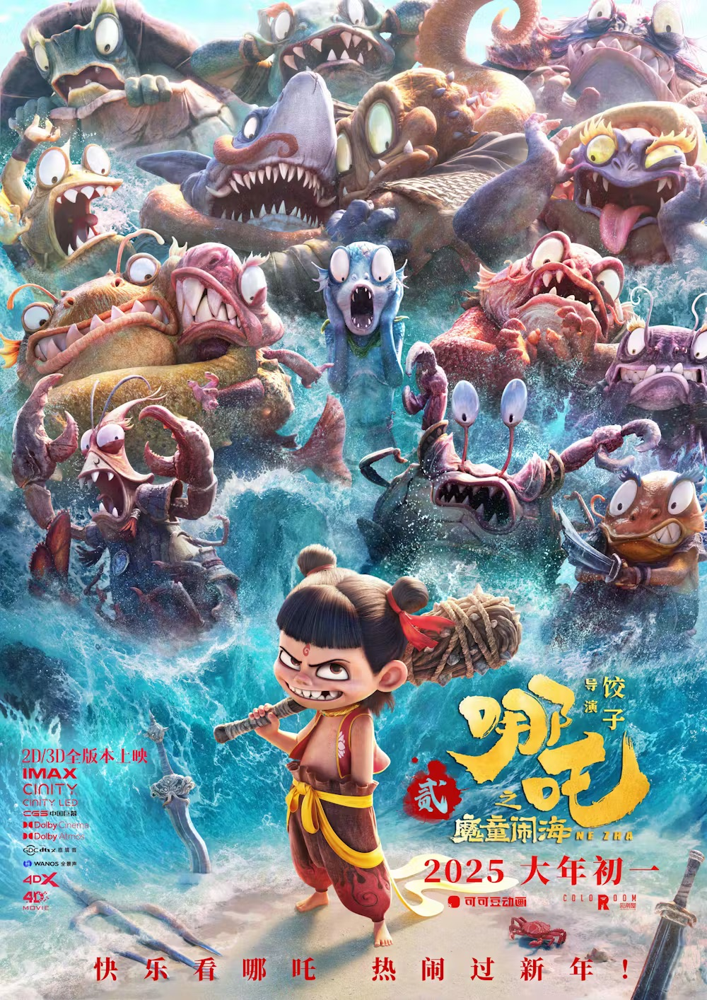
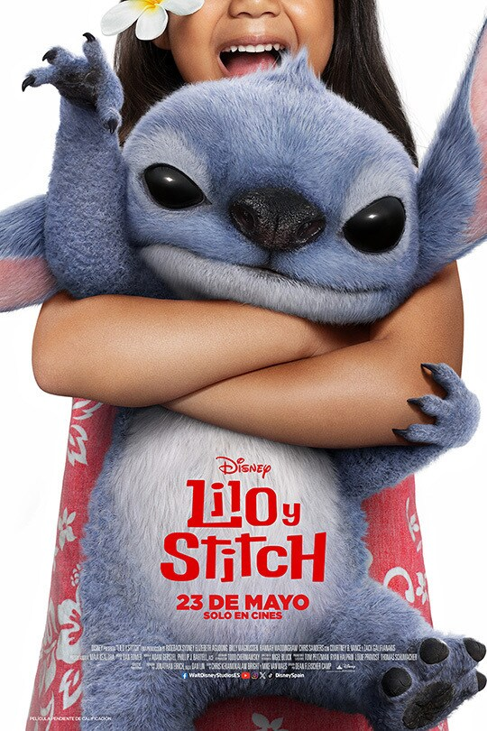
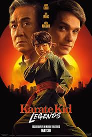
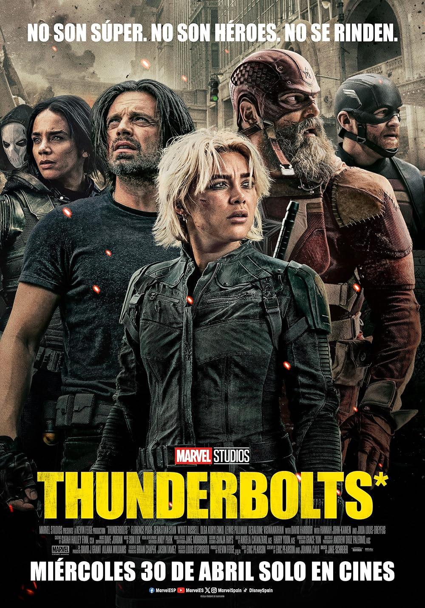

Ne Zha 2, también conocida como Nezha 2: El niño demonio revoluciona el mar,
es una película animada china de 2025, perteneciente al género de aventuras y fantasía,
dirigida y escrita por Jiaozi ver más
Minecraft
Cuatro inadaptados son arrastrados por un portal al Overworld, un misterioso lugar
que se nutre de la imaginación. Para volver a casa, tendrán que dominar el terreno mientras
se embarcan en una búsqueda con un artesano llamado Steve ver más
Lilo & Stitch

Una niña solitaria adopta a un perro que en realidad es un extraterrestre travieso que
se esconde de unos cazadores intergalácticos ver más
Misión Imposible La Sentencia Final 8
Las nuevas aventuras del agente del FMI y líder de un equipo de operativos, Ethan Hunt ver más
Destino Final: Lazos de Sangre
Lazos de sangre es una película de terror sobrenatural estadounidense de 2025 dirigida por Zach
Lipovsky y Adam Stein. Es la sexta entrega de la franquicia de películas Destino final ver más
Karate Kid: Leyendas

Karate Kid: Legends es una película estadounidense de artes marciales dirigida por
Jonathan Entwistle y escrita por Rob Lieber ver más
Thunderbolts

película de superhéroes estadounidense de 2025, basada en el equipo homónimo de Marvel Comics ver más